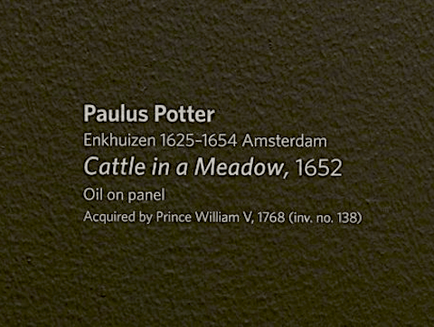

Thinking and Working Art Historically
How to approach the study of art
Let's get started by watching this introductory video on note-taking and choosing art objects and/or images.
Week 1 Skills Introduction (01:44)
In Week 1, we are going to build and develop your note-taking skills and help you select an art object that you will examine for the remainder of the semester. Before we jump into the specifics, let’s start with the big question: What is art history?
As the term “art history” implies, this interpretive enterprise combines two distinct but ultimately interrelated aspects: the study of individual works of art outside time and place (formal analysis and certain types of critical theory) and the historical study of art as a product of its broad cultural context (iconography and contextualism). The scope of art history is immense, commensurate with the many and varied ways human beings have represented their world and expressed their ideas and ideals in visual form.
In this course, we will consider the various methods, studies, and concerns relating to the discipline of art history. What is the role of connoisseurship and technical art history in the analyses of art objects? How does social history and material culture interact with the work of art historians, anthropologists, and archaeologists? What is our role in the preservation and documentation of art? What is art?
I look forward to hearing your thoughts on many of these questions in the coming weeks. Remember to take notes following the advice outlined in this module and start exploring art collections so that you may select an object to write about and present on this semester. Have fun!
What do art historians do?
Art historians do art. But we don't make it; we study it. We try to understand what artists express in their work and what viewers perceive. We try to understand why something was made at the time it was made, how it reflected the world it was made in, and how it affected that world. We talk about individual artists and their goals and intentions, but also about patrons (the people who commission artworks), viewers, and the kinds of institutions, places, and social groups in which art is made and circulates – whether that's an art school, temple, or government agency.
In other words, we look closely at artworks, but we also look at everything around them, which affects how they are made and perceived.
Why is Art History important?
It teaches you to think differently, to...
- Ask interesting questions
- Reject standard answers and conventional wisdom
- Look beyond surfaces and obvious appearances
- See the nuances in things
- Develop skills in visual analysis and critical reading
- Understand art as a way of expressing ideas, emotions, and viewpoints
- Build solid arguments and express ideas effectively, both verbally and in writing
It develops your visual literacy skills, to...
- Enhance your ability to "read" the world of appearances
- Understand and discuss the elements that give images power
- Transform you from a passive viewer to an active viewer
And it gives us unique access to the past because history cannot be told only through documents, texts, and words.
Among other things...5Ws + 1H: Who? What? When? Where? Why? How?
Art historians ask many questions when studying art. Below are some questions for you to consider throughout the term. In addition, we will explore another method—"SIAPFAR" developed by Professor Adam S. Cohen—for studying art in tutorials next week.
-
Who...
-
What...
-
When...
-
Where...
-
Why...
-
How...
Museum labels
Labels accompanying artworks provide the vital statistics prompted by the 5Ws + 1H. Click on the buttons on the photo below to find out what this label tells you about Paulus Potter's Cattle in a Meadow, a seventeenth-century Dutch painting housed in the Mauritshuis, The Hague.
-

-

Other information that is often displayed on museum labels includes:
-
Size
The measurements are important because they give you a sense of the work's scale. Size and scale are often hard to judge from photographs, especially in a textbook, which can picture a miniature portrait and a palace on the same page.
-
Period or Culture
This tells you the work's original time period or culture (as in the Edo Period, Japan, or a particular dynasty for Egyptian art). In art-history textbooks where the chapters are organized by period or culture, this reference may be omitted from the caption.